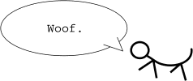

|
Gordon's Software |
|
|---|---|
|
Gordon Rogers is a research student in the Astrophysics department of Liverpool John Moores University. In his spare time he writes some excellent software and hacks around with the low-levels of the OS.
What is PseudoMem? PseudoMem is a simplified alternative to virtual memory. It provides, simply, a means of accessing the contents of files without loading them. You're probably thinking that you can do this with the OS's file handling SWIs anyway, but you can't run BASIC programs or plot sprites without loading them... until now. Unfortunately, because the program makes use of a new (although slightly bugged) feature of RISC OS 3.5+ (even more bugged on RISC OS 3.7, but who cares), it would require much more code to program it on earlier machines. It also makes use of dynamic areas, so there's another modification that would be needed. What does PseudoMem provide? A replacement to OS_Find which allows access to a file (via any STR, LDR, STM or LDM instruction - the only exception is SWP which the OS doesn't cater for) in a dynamic memory area. It also corrects the bugs mentioned above. What this means is that anything in the OS which uses any of the 4 main memory access instructions can now access files. This includes the *Memory commands, sprite access and even running or listing BASIC programs. It's also a very nice little module which tidies up after one of the horrible bugs in SpriteExtend (the one which prevents you from plotting JPEGs from <24K wimpslots). It also provides a convenient command line interface to the main aspects of its SWIs. Where can I get it? Click here to retrieve the distribution archive. Full documentation is included, along with the PseudoMem module itself. © Gordon Rogers, 1997 |
|
|
 |
|
Index - Hello - New! - Software [ dpt - gdr ] - BASIC
Notes - Good & Bad - Sticks - Links - Copyright
DaveSpace